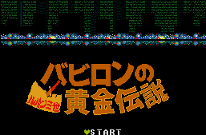

Lupin 3rd - MSX Games
- Genre: Platform game
- MSX Disk Type: MSX2 1Mbit ROM
From Patriek Lesparre:
The game has 8 stages. To finish a stage you have to find the two rings
and the exit. There are a number of items to be found, like bullets and
flashlights. In the top of the screen is a bar called Cup; when you
pick up green (small) or red (big) cups of noodles it'll grow. When you
find a hotwater-kettle your life will be (partially) renewed, depending
on the amount of Cup aquired.
Stage 1: First of all, hit all goatheads (some contain hidden
items). One of the hidden items is a rocket with a rope attached so
you'll be able to go up in the upper room. Stand under the recess in the
wall and press Up and A-button. The rocket is now launched and
your a level higher. Stand under the big goathead and jump (with B-button or GRAPH-key).
Stage 2: Hit all the busts to open the trap-door in the rightmost
room. Of course, you'll have to hit all the goatheads too. There are also
hidden items behind the lights. In the cellar, hit the chests on the left
for extra items. At the big goathead, go up (you found another rocket if
you've done everything right), take everything and go back to the goathead
and jump under it. In principle all the other stages are finished
similarly.
| Level |
Password |
| 2 |
R K V D D M F I V D |
| 3 |
F M M F H D F N W R |
| 4 |
W D M F S F M O K A |
| 5 |
V T Q D M D F J F A |
| 6 |
P V J M E E J M U F |
| 7 |
E E Q V F M W L O A |
| 8 |
W W S O M P O J F O |

- Genre: Platform game
- MSX Disk Type: MSX2 1Mbit ROM
From Patriek Lesparre:
Hints and Tips
- Pressing Up + B-button (GRAPH-key) will change your bubble-ammo.
The special ammo can be aquired by killing enemies.
- When you fall in the room with the flames, you must destroy the
flames by shooting bubbles at them, when you hold out long enough you'll
get a reward and be bounced back up again.
- Items will pop up when you pass certain points or jump at the right
places. Some of these will start a bonus game with Jigen or Goemon.
Anime Video Game Resource Center © 1998 by Luis A. Cruz